library(tidyverse)
library(easystats)
library(ggstatsplot) # Visualisierung
library(ggpubr) # Visualisierung
library(rstanarm) # Bayes12 Auswerten: Modellieren
12.1 Lernsteuerung
12.1.1 Lernziele
- Sie können die Modellformel Ihrer Forschungsfrage nennen.
- Sie können Ihre Modellformel (korrekt) in R spezifizieren.
- Sie können Ihr Modell in R berechnen und die Ausgabe interpretieren.
- Sie können die Gültigkeit bzw. die Grenzen der Aussagen Ihres Modells einschätzen.
12.1.2 Benötigte R-Pakete
12.1.3 Position im Lernpfad
Sie befinden sich im Abschnitt “Auswerten” in Abbildung 1.2. Behalten Sie Ihren Fortschritt im Projektplan im Blick, s. Abbildung 1.3.
12.1.4 Grundlagen der statischen Modellierung
Die Grundlagen der statistischen Modellierung mit einem Fokus auf Bayes-Modellen können Sie hier nachlesen.
12.1.5 Überblick
In diesem Kapitel sind die grundlegenden Verfahren zur Modellierung und inferenzstatistischen Absicherung Ihrer Forschungsfragen angerissen. Die Darstellung zielt auf ein “so-geht’s” ab, nicht auf eine vollständige Darstellung aller Auswertungsmöglichkeiten.
12.2 1 between-Variable
12.2.1 Design
Sauer und Lustig (2023) untersuchten in einer Querschnittsstudie den Effekt des Wirkstoff Bringnixtin auf die fluide Intelligenz. Die Autoren nahmen an, dass der Wirkstoff den individuellen Wert der abhängigen Variable erhöhen würde.
Der Ablauf (aus Sicht der Probandis) ist in Abbildung 12.1 dargestellt. Intro fasst die Begrüßung der Probandis inkl. Informed Consent sowie Erfassung von soziodemografischen Variablen zusammen. g.0 und g.1 sind die zwei Stufen der UV (g wie Gruppe), wobei g.0 die Kontrollgruppe kodiert (Placebo, also Zuckerpille, kein Wirkstoff,) und g.1 die zweite Stufe, d.h. die Experimentalgruppe (hohe Dosis Bringtnixtin). y2 ist die Messung der AV (d.h. nach Gabe von Bringtnixtin), d.h. ein Maß der fluiden Intelligenz. outro meint die Verabschiedung der Probanden sowie einige Fragen zu Compliance.
Die Hypothese lautet: \(\mu_{g.2} > \mu_{g.1}\).
In Worten:
Wir erwarten, dass der Mittelwert der Experimentalgruppe höher ist als der Mittelwert der Kontrollgruppe.
flowchart LR Intro --> g.0 Intro --> g.1 g.0 --> y2 g.1 --> y2 y2 --> outro
Der DAG des Experiments ist in Abbildung 12.2 dargestellt.
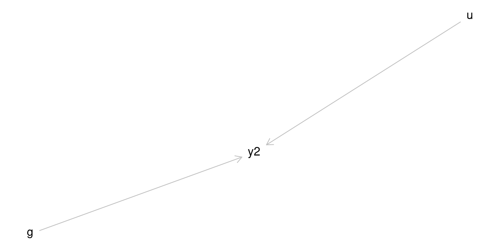
Hinweis
Im DAG Abbildung 12.2 ist u als Ursache von y2 angegeben. u steht hier stellvertretend für alle weiteren Ursachen von y2, vermutlich sind das sehr viele. Aber sie interessieren uns nicht. Daher können Sie u auch aus dem DAG weglassen. Streng genommen sollten Sie es sogar weglassen, denn im DAG zeigt man nur diejenigen Variablen, die für Ihre Hypothese von Belang sind. Da u keine Verbindung zum Pfad g -> y2 hat, brauchen wir es für die Bestimmung des Kausaleffekts nicht zu berücksichtigen.\(\square\)
Die Daten dieses Experiments sind hier zu beziehen:
d_bringtnixtin_path <- "https://raw.githubusercontent.com/sebastiansauer/fopra/main/data/d_bringtnixtin.csv"
d_bringtnixtin <- read_csv(d_bringtnixtin_path)Die Autoren der Studie geben an, dass die Daten in z-Einheiten skaliert sind.
12.2.2 Deskriptive Analyse
d_bringtnixtin %>%
group_by(g) %>%
summarise(iq_mw = mean(y2),
iq_sd = sd(y2)) Die deskriptiven Kennwerte sind in Abbildung 12.3 bzw. Abbildung 12.3 visualisiert. Das sieht nicht gerade nach einem großen Effekt aus …1
ggbetweenstats(
data = d_bringtnixtin,
x = g,
y = y2,
results.subtitle = FALSE # keine Statistiken zeigen
)
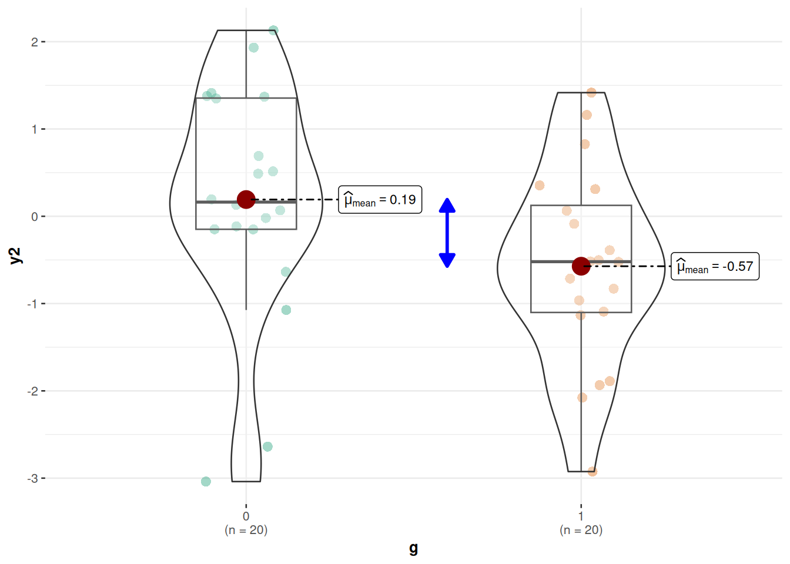
12.2.2.1 Mit ggpubr
ggboxplot(
data = d_bringtnixtin,
x = "g",
y = "y2"
)
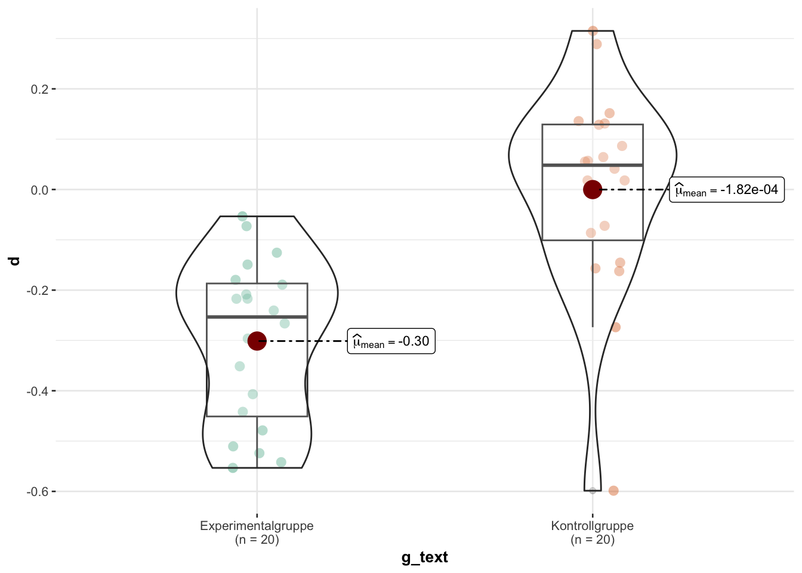
Sowohl das R-Paket ggstatsplot als auch das R-Paket ggpubr bieten ansprechende Datenvisualisierung.2
12.2.3 Modellierung
Wir berechnen ein lineares Modell mit der Modellformel y2 ~ g. Die Ergebnisse sind in Tabelle 13.5 zu sehen.
m_bringtnixtin <- stan_glm(y2 ~ g, data = d_bringtnixtin, refresh = 0, seed = 42)
parameters(m_bringtnixtin)Der Gruppenunterschied wird auf das -0.77 geschätzt; das ist der Punktschätzer der UV g. Wenn wir nur eine Zahl nennen dürften zu unserem Wissen zum Effekt von g, so wäre das unsere Zahl. Die Grenzen eines 95%-CI für die UV liegen bei -1.56 bzw. 0.02; diese beiden Werten markieren die Grenzen des Intervallschätzers. Dieser Bereich enthält die Null, vgl. Abbildung 12.5. Daher kann nicht ausgeschlossen werden, dass Bringtnixtin nix bringt. Anders gesagt: Die Nullhypothese kann nicht verworfen werden.
Die Punkt- und Intervallschätzer (95%-ETI) für Achsenabschnitt und Regressiongewicht von g sind in Abbildung 12.5 visualisiert.
Hinweis
Zur Erinnerung: Ein Punktschätzer schätzt einen (unbekannten) Wert in der Population auf einen einzelnen Wert (daher “Punkt”). Ein Interschätzer schätzt einen Wertebereich für diesen unbekannten Wert. \(\square\)
parameters(m_bringtnixtin) %>% plot(show_intercept = TRUE)
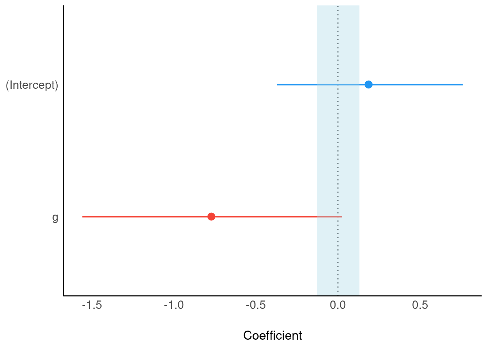
m_bringtnixtin (95%-ETI)
👨🏫 Frau Professor Lustig, wie kann das sein, dass sich die Hypothese nicht bestätigt?
👩🏫 Herr Professor Sauer, auch ein negatives Ergebnis bringt die Wissenschaft weiter.
Mit dem Rope-Verfahren kann man testen, ob ein Bereich um die Null herum, also “Null plus-minus ein bisschen” im Hauptbereich im Hauptbereich (95%-KI) enthalten ist.
Testen wir eine Nullhypothese mit dem ROPE-Verfahren: rope(m_bringtnixtin), s. Tabelle 12.3 und Abbildung 12.6.
| Parameter | CI | ROPE_low | ROPE_high | ROPE_Percentage | Effects | Component |
|---|---|---|---|---|---|---|
| (Intercept) | 0.95 | -0.13 | 0.13 | 0.29 | fixed | conditional |
| g | 0.95 | -0.13 | 0.13 | 0.03 | fixed | conditional |
plot(rope(m_bringtnixtin)) + scale_fill_okabeito()
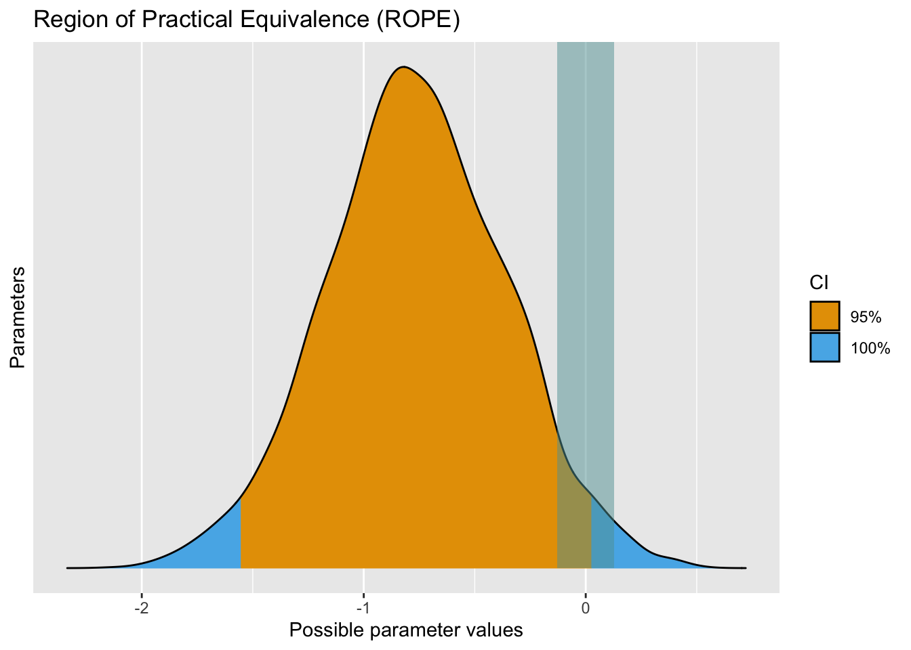
m_bringtnixtin
scale_fill_okabeito() ist eine Funktion aus dem Metapaket {easystats}.3 Das Farbschema nach Okabe und Ito ist gut geeignet, um nominal skalierte Farben zu kodieren (s. Details hier).
Da sich das 95%-CI mit dem ROPE überlappt, kann die Nullhypothese bzw. das ROPE (kein praktisch bedeutsamer Effekt) nicht ausgeschlossen werden.
Eine vergleichbare Information bietet uns die Kennzahl pd, s. Tabelle 13.5. Der Wert für g liegt bei ca. 0.97.
Hinweis
pd gibt die Wahrscheinlichkeit (laut Modell) an, dass der Effekt in der Population negativ bzw. positiv ist (d.h. gleich dem Vorzeichen des Punktschätzers; in diesem Fall negativ).\(\square\)
Das Modell ist sicher ziemlich sicher, dass der Effekt von g (in der Population) negativ ist. Aber eine kleine Chance, dass der Effekt von g doch (ungefähr) Null oder sogar positiv ist, bleibt.
👨🏫 Frau Professor Lustig, oh je! Unser Wirkstoff Bringtnixtin bringt anscheinend gar nix!
👩🏫 Herr Professor Sauer, wir müssen erst einmal in Ruhe die Studie replizieren. Eine Schwalbe macht noch keinen Frühling.
Berechnen wir abschließend noch eine standardisierte Effektstärke, \(R²\).
r2(m_bringtnixtin)
## # Bayesian R2 with Compatibility Interval
##
## Conditional R2: 0.089 (95% CI [4.766e-09, 0.251])Also etwa 9% erklärte Varianz. Aber ist das viel oder wenig? Fragen wir Herr Cohen, der hat sich dazu mal Gedanken gemacht.
interpret_r2(.09)
## [1] "weak"
## (Rules: cohen1988)Nach dieser Einschätzung ist der Effekt von g also schwach.
12.3 Vorher-Nachher-Messung, 1 between-Variable
12.3.1 Design
Sauer und Lustig (2023) fiel auf, dass es sinnvoller ist, zuerst die AV mittels eines Vortests zu messen, dann die Intervention anzuwenden, und dann nachher (Posttest) die AV wieder zu messen. Daher haben sie sowohl vor der Intervention (t1) als auch nach der Intervention (Gabe von Bringtnixtin), t2, die AV (y, Behaltensleistung) gemessen.
Hinweis
Eine Vorher-Nachher-Messung hat den Verteil, dass sie - im Gegensatz zur Nur-Nachher-Messung - unterschiedliche Ausgangswerte in der AV herausrechnet. Bei großen Gruppen wird sich bei einer randomisierten Zuweisung zu den Gruppen der Ausgangswert der AV angleichen. Bei nicht so großen Gruppen kann aber auch bei Randomisierung ein - mitunter erheblicher - Unterschied zwischen den Gruppen verbleiben. Findet man bei der Post-Messung einen Effekt, so kann es sein, dass dieser nicht auf die Intervention beruht, sondern auf die von vornherein vorhandenen Unterschieden zwischen den Gruppen.\(\square\)
Vergleicht man die Delta-Werte zwischen zwei Gruppen, berechnet man die Differenz zwischen den Gruppen der Delta-Werte. Man spricht daher von einer Difference-in-Difference-Analyse.\(\square\)
Abbildung 12.7 zeigt den Ablaufplan dieses Experiments.
flowchart LR Intro --> y1 y1 --> g.1 y1 --> g.2 g.1 --> y2 g.2 --> y2 y2 --> outro
DAG des Experiments ist in Abbildung 12.8 dargestellt.
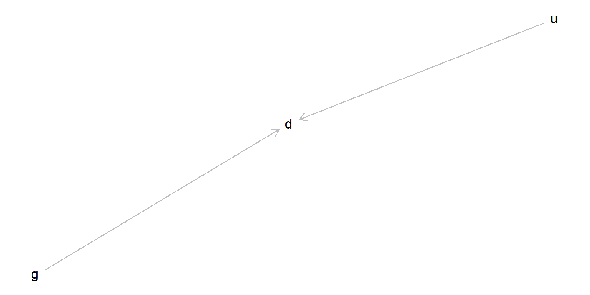
12.3.2 Deskriptive Analyse
Eine einfache (und sinnvolle) Art, solche Studiendesigns auszuwerten ist die Bildung einer Differenz-Variable4. Diese Differenzvariable gibt die Veränderung der fluiden Intelligenz durch die Intervention an. Anders gesagt: Die Differenz ist die IQ-Wert einer Person nach der Intervention minus dem IQ-Wert vor der Intervention: \(d = y_2 - y_1\):
d_bringtnixtin <-
d_bringtnixtin %>%
mutate(d = y2 - y1)Schauen wir uns die ersten paar d-Werte für jede der beiden Gruppen (g=0 bzw. g=1) an:
| id | g | y1 | y2 | d |
|---|---|---|---|---|
| 1 | 0 | 1.37 | 1.41 | 0.04 |
| 2 | 0 | -0.56 | -0.64 | -0.07 |
| 3 | 0 | 0.36 | 0.51 | 0.15 |
| 21 | 1 | -0.31 | -0.71 | -0.41 |
| 22 | 1 | -1.78 | -2.08 | -0.30 |
| 23 | 1 | -0.17 | -0.39 | -0.22 |
Vielleicht ist es anschaulicher, wenn wir die Gruppe 0 in den Text Kontrollgruppe umbenennen und 1 in Experimentalgruppe:
d_bringtnixtin <-
d_bringtnixtin %>%
mutate(g_text =
case_when(g == 0 ~ "Kontrollgruppe",
g == 1 ~ "Experimentalgruppe"))Hier sind die Mittelwerte für jede der beiden Gruppen:
d_bringtnixtin %>%
group_by(g_text) %>%
summarise(d = mean(d))| g_text | d |
|---|---|
| Experimentalgruppe | -0.30 |
| Kontrollgruppe | -1.82e-04 |
Die deskriptiven Kennwerte sind in Abbildung 12.9 dargestellt.
ggbetweenstats(
data = d_bringtnixtin,
x = g_text,
y = d,
results.subtitle = FALSE # keine Statistiken zeigen
)
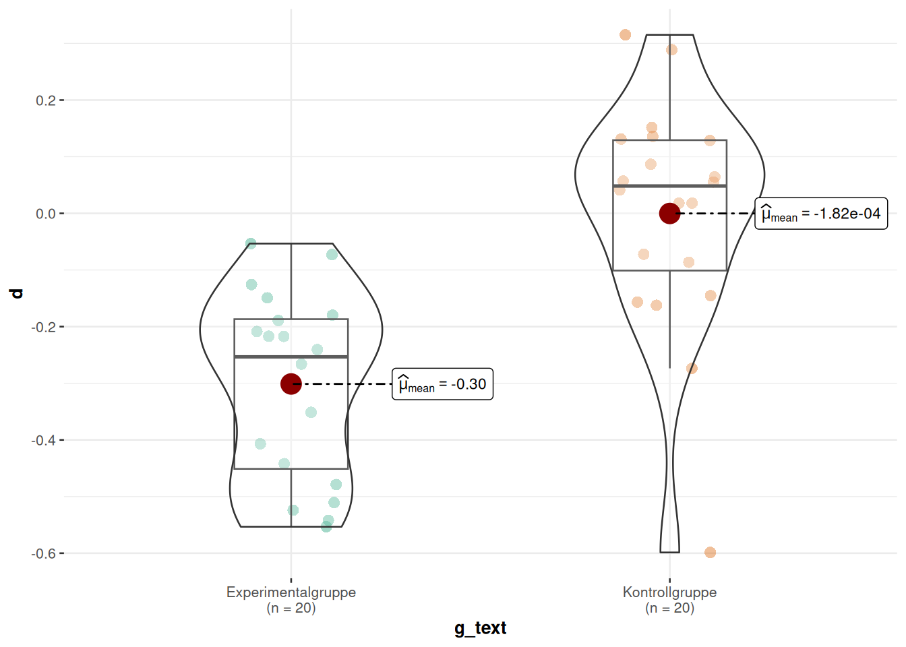
12.3.3 Modellierung
Wir modellieren (in m_bringtnixtin2) jetzt die Veränderung d = y2 - y1 als AV; UV ist wieder g, s. Tabelle 12.4.
m_bringtnixtin2 <- stan_glm(d ~ g, data = d_bringtnixtin, refresh = 0, seed = 42)
parameters(m_bringtnixtin2)m_bringtnixtin2
| Parameter | Median | 95% CI | pd | Rhat | ESS | Prior |
|---|---|---|---|---|---|---|
| (Intercept) | -1.34e-03 | (-0.08, 0.08) | 51.42% | 1.000 | 3934.00 | Normal (-0.15 +- 0.59) |
| g | -0.30 | (-0.41, -0.18) | 100% | 0.999 | 4181.00 | Normal (0.00 +- 1.17) |
Abbildung 12.10 zeigt die Parameterwerte für m_bringtnixtin2,
plot(parameters(m_bringtnixtin2))
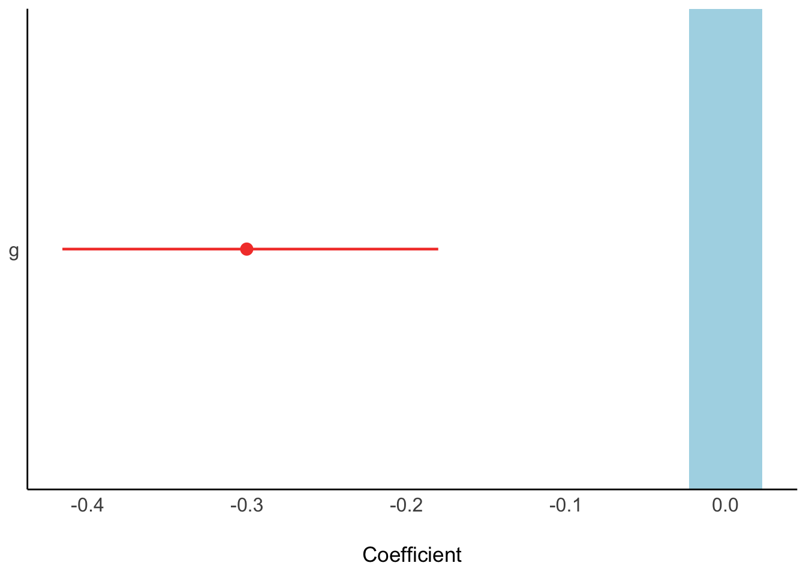
Wie man den Parameterwerten entnehmen kann, ist sich das Modell sehr sicher, dass der Effekt von Bringtnixtin negativ ist.
12.4 Beobachtungsstudien
Gängige Forschungsfragen für Beobachtungsstudien sind hier erläutert.
12.5 1 within-Variable
Eine Studie mit Vorher-Nachher-Messung setzt ein Within-Design um.
Beispiel 12.1 (Statisches Diagramm vs. animiertes Diagramm) Ein Forschungsteam untersuch den Effekt der UV Visualisierungsart V (mit den zwei Stufen V.1 animiert und V.2 statisch) auf die Behaltensleistung (y) von Probanden. Nach jeder Bedingung wird die Behaltensleistung gemessen (anhand von 10 Wissensfragen, die jeweils als “richtig” oder “falsch” bewertet wurden), mit y1 nach V.1 und y2 für V.2.\(\square\)
12.5.1 Design
Forschungsfrage:
Hat die Diagrammart einen Einfluss auf die Behaltensleistung? Anders gesagt: Unterscheiden sich die Diagrammarten in ihrem Einfluss auf die mittlere Behaltensleistung?
Die zugehörige statistische Hypothese kann man so formulieren: \(\bar{d} \ne 0\), wobei \(d = y_1 - y_2\). \(d\) misst also den Unterschied der Behaltensleistung von animierten und statischen Diagrammen, wobei positive Werte zugunsten von statischen Diagrammen sprechen.
Die Modellformel lautet: d ~ 1, das ist ein Intercept-Modell, also ein Modell ohne Prädiktor. Uns interessiert, ob die Variable d im Mittelwert ungleich Null ist oder positiv (zugunsten statischer Diagramme) oder negativ (Behaltensleistung höher bei animierten Diagrammen).
Der Ablauf der Studie (aus Sicht der Probandis) ist in Abbildung 12.11 dargestellt.
flowchart LR V.1 --> y1 --> V.2 --> y2
Der DAG des Experiments ist in Abbildung 12.12 dargestellt.
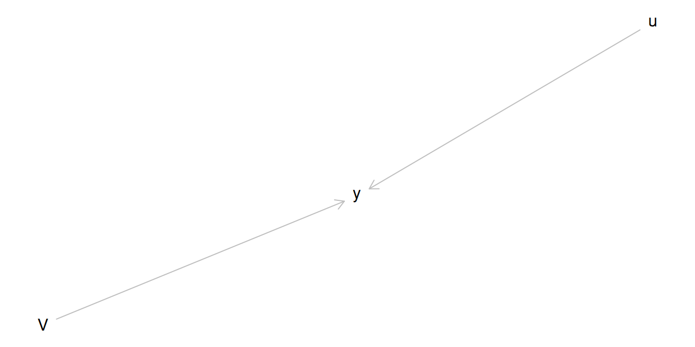
12.5.2 Deskriptive Analyse
Hier sind einige Spieldaten:
d_within <-
read_csv("https://raw.githubusercontent.com/sebastiansauer/Lehre/main/data/withindesign.csv") %>%
select(-c(y3, g)) # diese beiden Variablen ignorieren wir für den Augenblick
head(d_within)Wir berechnen d, was die zentrale Variable der Forschungsfrage ist.
d_within <-
d_within %>%
mutate(d = y1 - y2)
head(d_within)Es klingt trivial, aber man muss sich ein Bild von den Daten (hier d) machen, wortwörtlich, s. Abbildung 12.13.
gghistostats(d_within,
x = d,
results.subtitle = FALSE # verzichte auf zusätzliche Statistiken
)
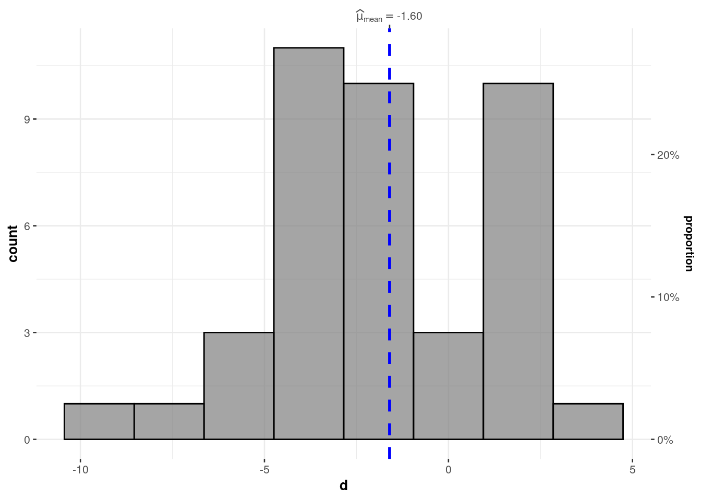
Da d im Mittel negativ ist, ist der Mittelwert von y2 (animiert) höher als der von y1 (statisch).
Lassen wir uns die deskriptiven Kennwerte ausgeben, s. Tabelle 12.5.
d_within %>%
describe_distribution(d)d
| Variable | Mean | SD | IQR | Range | Skewness | Kurtosis | n | n_Missing |
|---|---|---|---|---|---|---|---|---|
| d | -1.60 | 2.63 | 4 | (-9.00, 3.00) | -0.55 | 0.30 | 40 | 0 |
Um die Daten noch anders visualisieren zu können, formen wir sie ins “lange Format” um.
d_long <-
d_within %>%
pivot_longer(cols = c(y1, y2), names_to = "time", values_to = "y")Hier ist ein Auszug aus der Tabelle:
head(d_long)Visualisieren wir uns die Daten, s. Abbildung 12.14.
ggwithinstats(
data = d_long,
x = time,
y = y,
results.subtitle = FALSE # verzichte auf zusätzliche Statistiken
)
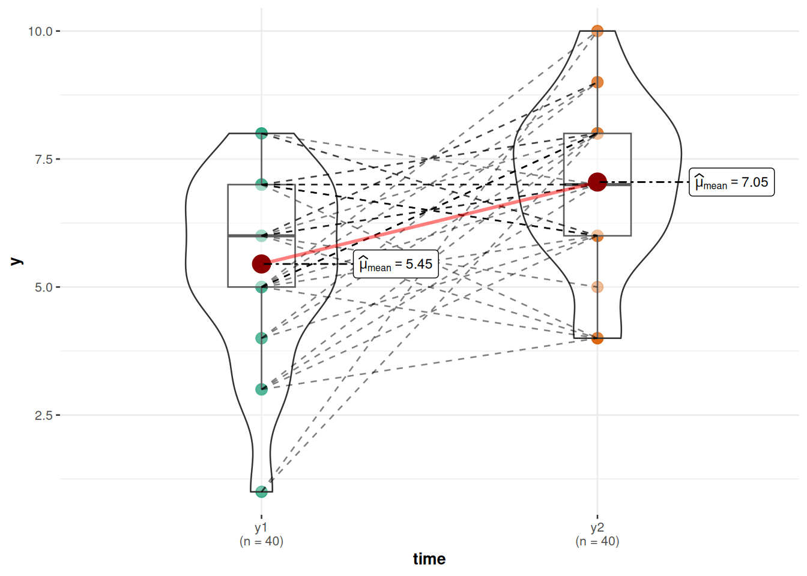
12.5.3 Inferenzanalyse
Wir berechnen das Modell (m_within),s. Tabelle 12.6:
m_within <- stan_glm(d ~ 1, data = d_within, refresh = 0, seed = 42)
parameters(m_within)| Parameter | Median | 95% CI | pd | Rhat | ESS | Prior |
|---|---|---|---|---|---|---|
| (Intercept) | -1.59 | (-2.46, -0.69) | 100% | 1.000 | 2536.00 | Normal (-1.60 +- 6.57) |
Hier ist eine Visualisierung des 95%-ETI des Unterschieds (d) zwischen den beiden Bedingungen (Abbildung 12.15).
parameters(m_within) %>% plot(show_intercept = TRUE)
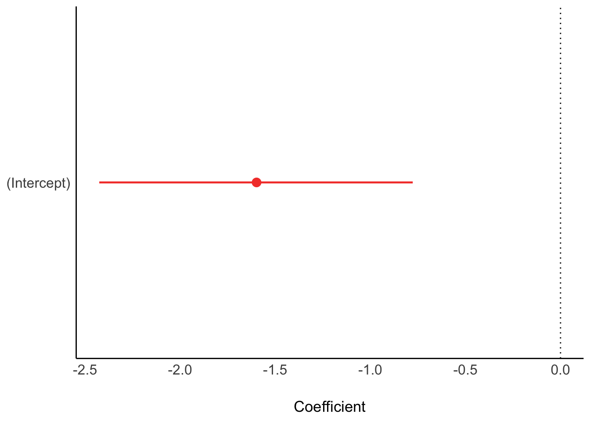
Hinweis
Wenn Sie die parameters plotten und nur einen Intercept haben, müssen Sie mit show_intercept=TRUE einschalten, dass er gezeigt wird. Sonst gibt es eine Fehlermeldung.\(\square\)
Wie man sieht, ist die Null nicht im CI enthalten. Wir können daher resümieren, dass es einen Unterschied zwischen den Bedingungen (statisch vs. animiert) gibt hinsichtlich y2 (Behaltensleistung). Die Behaltensleistung animierter Diagramme ist der von statischen Diagrammen überlegen (laut diesem Modell). Die exakte Nullhypothese ist zu verwerfen. Natürlich könnte man jetzt noch ein Rope berechnen.
12.5.4 Vertiefung
In diesem Blog-Post findet eine kleine Fallstudie zur Analyse von “Vorher-Nachher-Daten”.
12.6 1 within-Variable, 1 between-Variable
12.6.1 Design
Forschungsfrage:
Hat die Diagrammart einen Einfluss auf die Behaltensleistung? Anders gesagt: Unterscheiden sich die Diagrammarten in ihrem Einfluss auf die Behaltensleistung? Dabei kontrollieren wir die Reihenfolge.
Forschungspraktisch bedeutet das, dass es zwei Gruppen, g1 und g2 in diesem Experiment gibt. Diese beiden Gruppen definieren eine between-Variable, g, die die Reihenfolge der Darbietung kontrolliert, s. Abbildung 12.16. Die Diagrammart D ist auch eine UV, aber als Within-Variable konzipiert.
flowchart LR
subgraph g2
direction LR
V.1 --> y1 --> V.2 --> y2
end
subgraph g1
direction LR
D2[V.2] --> y22[y2] --> D1[V.1] --> y11[y1]
end
Da es zwei UVs gibt, gibt es auch zwei Hypothesen:
- H1: \(\bar{d} < 0\), mit \(d = y_1 - y_2\): Die mittlere Behaltensleistung ist in der Bedingung animiert höher als in der Bedingung statisch.
- H2: \(\bar{d}_{g.1} = \bar{d}_{g.2}\): Der Unterschied in der Behaltensleistung zwischen den zwei Bedingung unterscheidet sich nicht von der Reihenfolge der Darbietung.
Die Modellformel lautet: y ~ 1 + g. Das kann man synonym so schreiben: y ~ g. y meint die Behaltensleistung; statisch erfassen wir den Effekt auf y anhand des Differenzmaßes d.
Der DAG des Experiments ist in Abbildung 12.17 dargestellt.
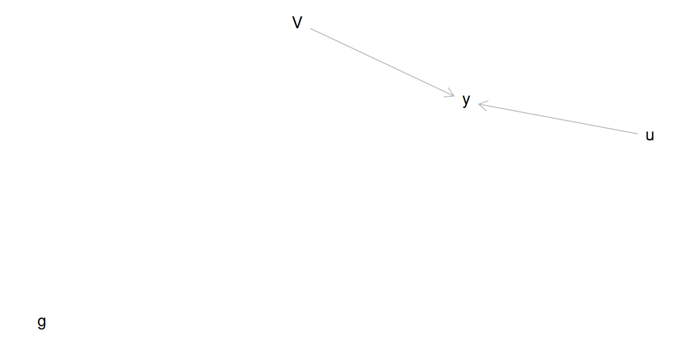
12.6.2 Deskriptive Analyse
Hier sind einige Spieldaten:
d_within <-
read_csv("https://raw.githubusercontent.com/sebastiansauer/Lehre/main/data/withindesign.csv") %>%
select(-c(y3)) # die Variable `y3` ignorieren wir für den Augenblick
head(d_within)Wir berechnen d, der Unterschied zwischen den beiden Bedingungen:
d_within <-
d_within %>%
mutate(d = y1 - y2)
head(d_within)Betrachten wir den Unterschied von d zwischen den Gruppen (H2), s. Abbildung 12.18.
ggbetweenstats(
d_within,
x = g,
y = d,
results.subtitle = FALSE
)
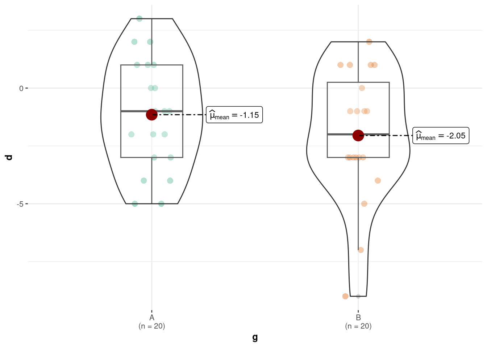
Es gibt einen gewissen Unterschied zwischen den beiden Reihenfolgen (A und B) wie Abbildung 12.18 zeigt; die Reihenfolge könnte also einen Einfluss auf d haben. Aber wir müssen inferenzstatistisch prüfen, wie groß der Einfluss ist.
12.6.3 Inferenzanalyse
Berechnen wir m_within2, das nicht nur den Intercept prüft (wie m_within1), sondern auch zusätzlich den Effekt der Reihenfolge (g), vgl. Tabelle 12.7.
m_within2 <- stan_glm(d ~ g, data = d_within, refresh = 0, seed = 42)| Parameter | Median | 95% CI | pd | Rhat | ESS | Prior |
|---|---|---|---|---|---|---|
| (Intercept) | -1.15 | (-2.33, -8.72e-03) | 97.60% | 0.999 | 3902.00 | Normal (-1.60 +- 6.57) |
| gB | -0.89 | (-2.61, 0.73) | 86.28% | 1.000 | 3684.00 | Normal (0.00 +- 12.98) |
Das CI für die Reihenfolge (Variable gB) beinhaltet die Null; Daher kann ein Nulleffekt der Reihenfolge - also kein Effekt der Reihenfolge - nicht ausgeschlossen werden, g=0 ist also im Bereich der plausiblen Werte.
Der Effekt für d ((Intercept)) zeigt ein Intervall, das die Null (knapp) enthält. Daher können wir wir die Nullhypothese nicht mit hoher Sicherheit ausschließen.
In Summe:
- H1 (Höhere Behaltensleistung von animiert) konnte nicht bestätigt werden, aber tendenziell fand sich ein Effekt in erwarteter Richtung (zugunsten einer höheren Behaltensleistung von animiert).
- H2 (Reihenfolgeeffekt) konnte nicht bestätigt werden.
12.7 Vertiefung
12.7.1 1 within-Variable mit mehr als zwei Stufen
VERTIEFUNG - Sie können diesen Abschnitt ohne Gefahr ignorieren.
12.7.2 Design
Eine Forscherin hat die Gesundheit (y) von Studentis drei Mal (t1, t2, t3) im Zeitraum eines Semesters untersucht.
Ihre Forschungsfrage lautet, ob sich die Gesundheit im Laufe des Semesters substanziell verändert. Ihre Hypothese lautet, dass die Werte über die Zeit hinweg stabil bleiben.
12.7.3 Deskriptive Analyse
Hier sind einige Spieldaten:
d_within <-
read_csv("https://raw.githubusercontent.com/sebastiansauer/Lehre/main/data/withindesign.csv")
head(d_within)Hier benötigen wir die Daten in Langform:
d_long <-
d_within %>%
pivot_longer(cols = y1:y3, names_to = "time", values_to = "y")
head(d_long)Es hilft (wie meistens), sich die Daten zu visualisieren, s. Abbildung 12.19.
p_y123_a <-
d_long %>%
ggplot(aes(x = time, y = y)) +
geom_jitter(width = .2)
p_y123_b <-
ggwithinstats(d_long,
x = time,
y = y,
results.subtitle = FALSE)
p_y123_a
p_y123_b
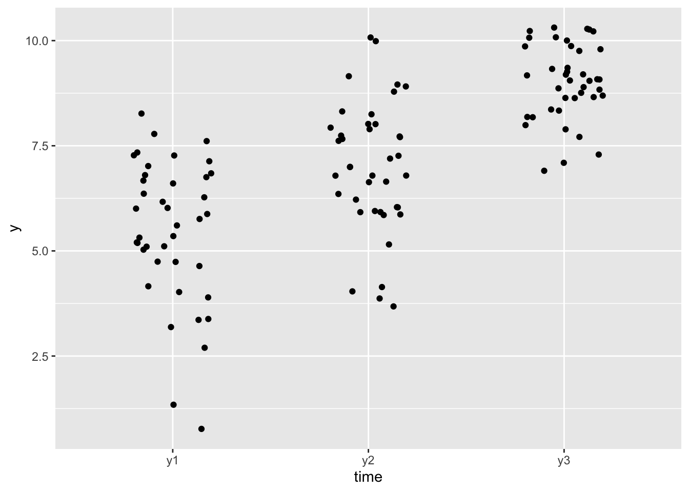
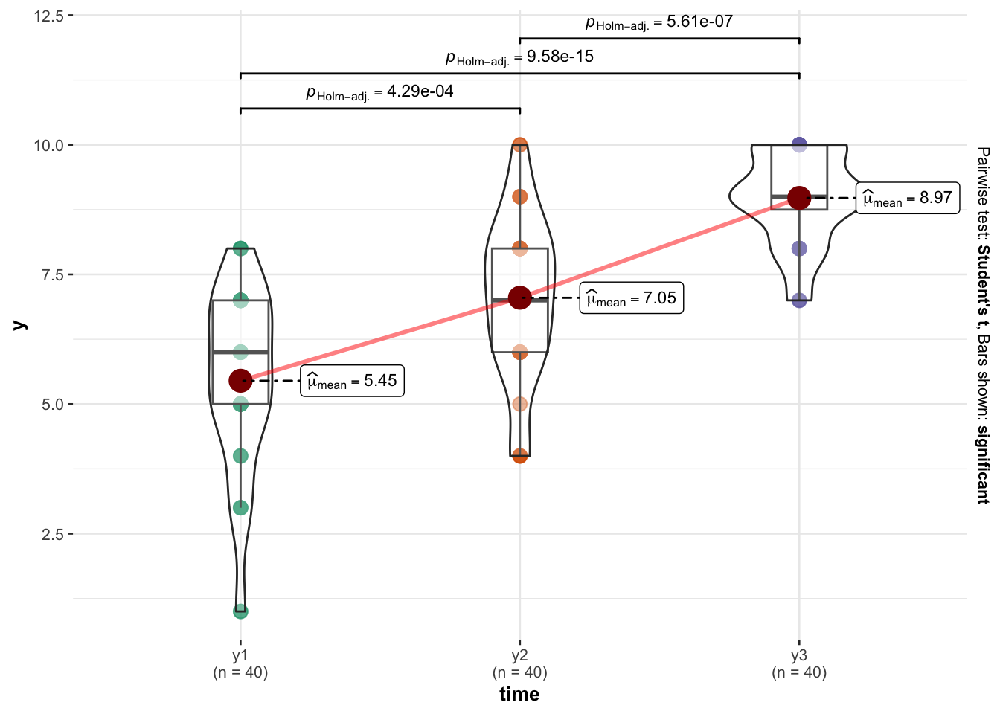
Berechnen wir die Mittelwerte von y pro Messzeitpunkte sowie die Veränderung von t1 zu t2 bzw. von t2 zu t3, s. Tabelle 12.8.
d_long %>%
group_by(time) %>%
summarise(y_mean = mean(y)) %>%
mutate(d = y_mean - lag(y_mean))y pro Messzeitpunkte (y_mean) sowie die Veränderung von t1 zu t2 bzw. von t2 zu t3 (d)
| time | y_mean | d |
|---|---|---|
| y1 | 5.45 | |
| y2 | 7.05 | 1.60 |
| y3 | 8.97 | 1.92 |
12.7.4 Inferenzanalyse
m_within3 <- stan_lmer(y ~ 1 + (1 | time), data = d_long, refresh = 0)
summary(m_within3)
##
## Model Info:
## function: stan_lmer
## family: gaussian [identity]
## formula: y ~ 1 + (1 | time)
## algorithm: sampling
## sample: 4000 (posterior sample size)
## priors: see help('prior_summary')
## observations: 120
## groups: time (3)
##
## Estimates:
## mean sd 10% 50% 90%
## (Intercept) 7.2 1.2 5.8 7.2 8.5
## b[(Intercept) time:y1] -1.7 1.2 -3.0 -1.7 -0.3
## b[(Intercept) time:y2] -0.1 1.2 -1.5 -0.1 1.3
## b[(Intercept) time:y3] 1.8 1.2 0.4 1.8 3.2
## sigma 1.5 0.1 1.3 1.4 1.6
## Sigma[time:(Intercept),(Intercept)] 4.7 5.1 1.1 3.1 10.2
##
## Fit Diagnostics:
## mean sd 10% 50% 90%
## mean_PPD 7.2 0.2 6.9 7.2 7.4
##
## The mean_ppd is the sample average posterior predictive distribution of the outcome variable (for details see help('summary.stanreg')).
##
## MCMC diagnostics
## mcse Rhat n_eff
## (Intercept) 0.0 1.0 1181
## b[(Intercept) time:y1] 0.0 1.0 1201
## b[(Intercept) time:y2] 0.0 1.0 1225
## b[(Intercept) time:y3] 0.0 1.0 1179
## sigma 0.0 1.0 2953
## Sigma[time:(Intercept),(Intercept)] 0.1 1.0 1501
## mean_PPD 0.0 1.0 3725
## log-posterior 0.1 1.0 1078
##
## For each parameter, mcse is Monte Carlo standard error, n_eff is a crude measure of effective sample size, and Rhat is the potential scale reduction factor on split chains (at convergence Rhat=1).Die Schreibweise (1 | time) soll sagen, dass die Messwerte innerhalb von time verschachtelt sind und variieren. Die 1 sagt, dass es sich bei der variierenden Größe um den Intercept handelt, nicht um eine UV.
Ein “fixer” Effekt ist ein Effekt, für den kein Pooling stattfindet, das ist hier der Intercept.
Nur die festen (fixed) Effekte kann man sich so ausgeben lassen:
fixef(m_within3)
## (Intercept)
## 7.166984Im Durchschnitt werden ca. 7.1 Fragen richtig beantwortet (Gesamtmittel); das ist die Information die der Punktschätzer des Intercepts bietet.
Nur die Random-Effekte kann man sich so ausgeben lassen:
ranef(m_within3)
## $time
## (Intercept)
## y1 -1.672117
## y2 -0.123990
## y3 1.760269
##
## with conditional variances for "time"Das sind jeweils die Abweichungen der Gruppenmittelwerte (y1, y2, y3) vom Gesamtmittel. Die Random-Effekte kann man sich visualisieren lassen, s. Abbildung 12.20.
plot(m_within3)
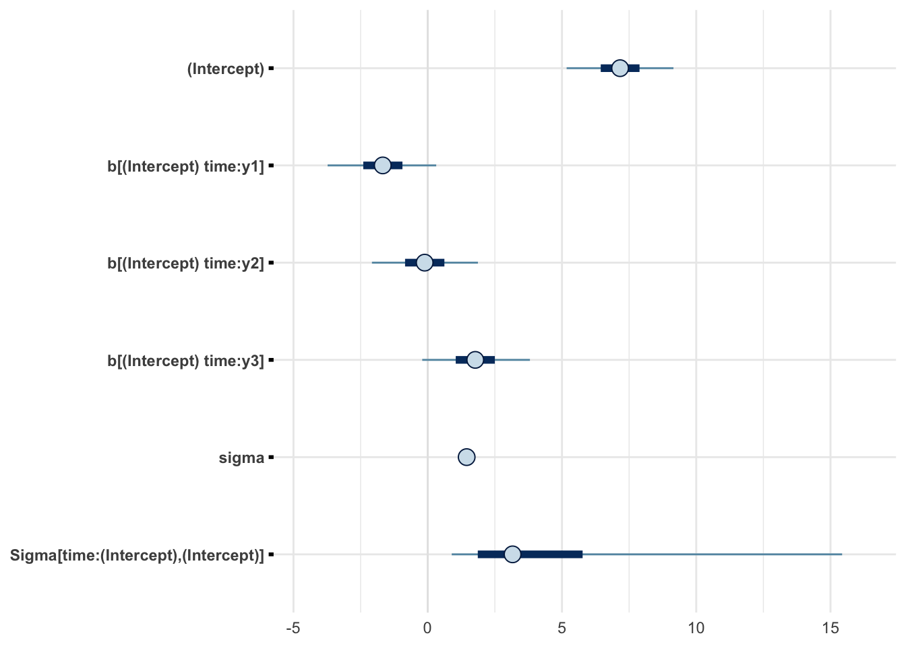
m_within3
12.7.5 Mediatoranalyse
Hier findet sich eine Einführung in die Mediationsanalyse. Dieses R-Paket stellt ebenfalls komfortable Funktionen zur Verfügung für Mediationsanalysen.
12.8 Fazit
Unter Modellieren versteht man in der Forschungspraxis meist ein Regressionsmodell der Form av ~ uv. Die Inferenzstatistik hilft, die Modellparameter mit Schätzwerten für die Population zu versehen.
12.9 Aufgaben
Schauen Sie sich im Datenwerk die Aufgaben mit folgenden Tags an: